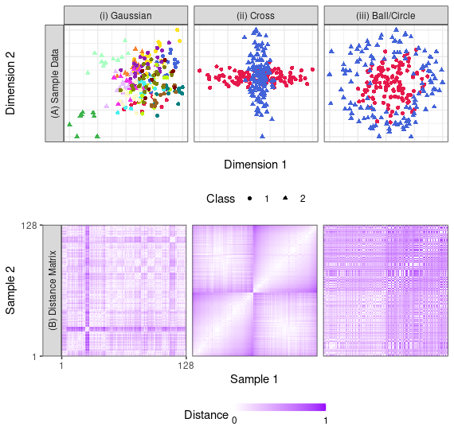
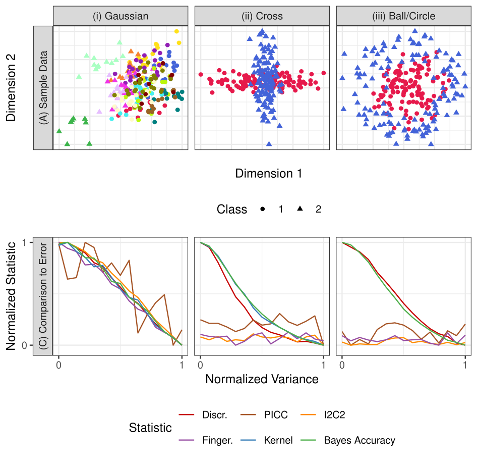

<!-- TODO add slide numbers & maybe slide name --> ### Sources of variability in high-dimensional datasets  | Eric W. Bridgeford | {Biostatistics, BME, CIS} | | --- | --- | | [ericwb95@gmail.com](mailto:ericwb95 at gmail dot com) | [ericwb.me](https://ericwb.me) | --- #### Defense suggestions - please mute yourself and turn off video during the defense - If you have questions, please place them in chat and we will address them later on, or raise your hand at the end of the defense --- name:talk ### Outline - [Repeatability](#repeat) - [Variability in High-Dimensional Measurements](#vara) ### [Additional Content](#extra) --- name:repeat ### Outline - Repeatability - [Variability in High-Dimensional Measurements](#back) ### [Additional Content](#extra) --- ### Typical approach to inference <p align="center">  </p> - goal: establish relationship between exposure of interest and data samples, conditional on other covariates - conclusion is externally valid: our analysis "generalizes" - domain expertise: context for unmeasured variables --- ### Measurements are usually manipulated prior to analysis <p align="center">  </p> - the measurement that we obtain is rarely the measurement of interest - .ye[derivative]: information that is a function of a raw measurement that is used to learn about the data --- #### Similar measurements can be collected using many different techniques  - small differences in acquisition protocols (device used, settings, technician preparation, etc.) can impart biases to measurements --- ### Reality of inference  - .ye[Accidental deviations]: sources of variability not of scientific interest - .ye[Systematic deviations]: variability of interest - fundamental question of data science: identify systematic deviations in the presence of accidental deviations --- ### What is Reproducibility? - .ye[Reproducibility]: ability to replicate, or reproduce, a conclusion - serves as a "first-pass" check for scientific utility - currently in a "reproducibility crisis" --- ### How do we address the Reproducibility Crisis? - fix post hoc analyses (e.g., $p$-values)? - fix measurements (e.g., measurement reproducibility)? Proposal: design experiments to maximize .ye[inter-item discriminability], rather than simply checking reproducibility after conducting the experiment  --- ### Contributions (Discriminability) 1. Discriminability quantifies the contributions of systematic and accidental deviations 2. Provide theoretical motivation for discriminability in connection with predictive accuracy for .ye[arbitrary tasks] 3. Formalize tests for assessing and comparing discriminabilities within and between collection strategies 4. Illustrate the value of optimizing discriminability for neuroscience and genomics data when downstream inference task .ye[unknown] 5. Code implementations in [python](https://github.com/neurodata/hyppo) and [R](https://github.com/neurodata/r-mgc) 6. Applications paper [1] and theory paper [2] --- name:vara ### Outline - [Repeatability](#repeat) - Variability in High-Dimensional Measurements - [Motivation and background](#back) - [Notation](#theory) - [Batch effect detection](#detect) - [Batch effect removal](#removal) - [Results](#results) - [Discussion](#disc) ### [Additional Content](#extra) --- name:back ### Outline - [Repeatability](#repeat) - Variability in High-Dimensional Measurements - Motivation and background - [Notation](#theory) - [Batch effect detection](#detect) - [Batch effect removal](#removal) - [Results](#results) - [Discussion](#disc) ### [Additional Content](#extra) --- ### Typical problem in causal inference <center></center> - goal: estimate impact of an exposure (smoking) on measurements (cancer), given a set of covariates (ages) --- ### Problem 1: Unmeasured variables <center></center> - what if we didn't measure genetics, but genetics cause cancer and influence smoking? [3] --- ### Solution 1 <center></center> - Assume unmeasured variables are minimally impactful --- ### Problem 2 <center></center> - Measured: old smokers, and young non-smokers - did the smoking cause the cancer, or is cancer just a function of aging? - Technical term: .ye[Confounding] --- ### Connectome data - connectome: brain graph, where the edges indicates the level of functional similarity or structural connectivity between areas of the brain <p align="center">  </p> - very high-dimensional - properties about graph $\Rightarrow$ insights about brain function - expense $\Rightarrow$ collect data and pool (mega studies) --- ### The problem of batch effects - .ye[batch effect]: the impact of the data collection procedure (measurement device, measurement protocol, season, etc.) on the data collected [4] - .ye[demographic effect]: impact on the data of scientifically "interesting" characteristics of the object under study - When datasets are demographically diverse (high confounding) and measurements are large (high number of features), difficult to <tagname style="color:red">mitigate batch effects</tagname> while <tagname style="color:green;">preserving demographic effects</tagname> --- ### DAG for a neuroimaging study <center></center> --- ### Existing work (detection) - classical causal inference focuses on this problem for univariate measurements (e.g., smoking) - some work (conditional independence testing) attempts to do this in multivariate regimes - unclear the extent to which these provide reasonable answers in the face of confounding for high-dimensional data --- ### Existing work (correction) - ComBat [4] - fit a linear model, where individual "batches" are a linear transformation of one another - optional: "adjust" with terms for covariates (e.g., age, sex) -- - Surrogate Variable Analysis [5,6] - use latent variable models to capture sources of batch heterogeneity -- - NeuroHarmonize [7] - estimate covariate relationships with Generalized Additive Models (GAMs) --- ### How do we propose to address batch effects? - skip to latent variable modelling (e.g., SVA)? - focus on estimation with linear/non-linear models (e.g., ComBat, NeuroHarmonize)? - "It is impossible to publish a paper with multiple datasets in neuroimaging without using ComBat in 2023" Proposal: leverage techniques from .ye[causal inference] to yield strategies which are both theoretically and empirically sensible for batch effect analyses [8,9] - develop suitable language and estimands which allow us to be .ye[precise] when referring to batch effects --- ### Motivating questions - how do we detect causal effects in arbitrary metric spaces? - how do we formulate batch effects as a problem in causal inference? - under what assumptions are existing techniques to estimate batch effects reasonable? - how robust are these techniques to measured confounding? - .ye[Do we properly understand the limitations of this technique that is used across neuroimaging?] --- name:theory ### Outline - [Repeatability](#repeat) - Variability in High-Dimensional Measurements - [Motivation and background](#back) - Notation - [Batch effect detection](#detect) - [Batch effect removal](#removal) - [Results](#results) - [Discussion](#disc) ### [Additional Content](#extra) --- ### General notation | Symbol | Interpretation | | --- | --- | | $U$ | random variable | | $u$ | realization of random variable $U$ | | $F\_{U \vert v}$ | distribution of $U$ conditional on $V = v$ | | $f\_{U \vert v}(u)$ | density of $u$ conditional on $V = v$ | | $P\_{U \vert v}(u)$ | probability of $U = u$ conditional on $V = v$ | --- ### Specific notation | Symbol | Interpretation | | --- | --- | | $Y_i$ | random variable representing an outcome | | $T_i$ | random nominal ($1$ of $K$) exposure | | $X_i$ | random variable representing measured covariates | | $Z_i$ | random variable representing unmeasured covariates | | $Y_i(t)$ | potential outcome under exposure $t$ | --- name:detect ### Outline - [Repeatability](#repeat) - Variability in High-Dimensional Measurements - [Motivation and background](#back) - [Notation](#theory) - Batch effect detection - [Batch effect removal](#removal) - [Results](#results) - [Discussion](#disc) ### [Additional Content](#extra) --- ### Causal discrepancy Let $ F\_{Y\_i\(t\)| x, z}$ denote the potential outcome distribution, conditional on the measured .ye[and] unmeasured covariates - distribution we would expect in exposure $t$ for an individual $i$ with covariates $(x, z)$ $$\forall t \in [K]:\;\;\;\;f\_{Y\_i(t)}(y) = \int\_{\mathcal X, \mathcal Z} f\_{Y\_i\(t\)| x, z}(y) f(x,z) d(x,z)$$ for two exposures $k$ and $l$, there is a .ye[causal discrepancy] if: $$F\_{Y\_i(k)} \neq F\_{Y\_i(l)}$$ -- - idea: potential outcomes (e.g., connectomes) for an individual differ in exposures (e.g., batches) $k$ and $l$ - "batch effect" --- ### Observational studies and causality - .ye[observational study]: exposure is not controlled directly by the experimenters - $Y_i$ and $Y_i(t)$ do not, in general, have similar conditional/unconditional distributions -- - problem: sensible definition of a batch effect relies on potential outcomes $Y_i(t)$ -- - what other estimands "might" people discuss? --- ### Conditional Effect - Observe $\left(y_i, t_i, x_i\right)$ for all $i \in [n]$ - $F_{Y\_i \vert t, x}$ is the .ye[observed] outcome distribution, conditional on the exposure (e.g., batch) and covariates $x$ .ye[Conditional effect] exists between exposures $k$ and $l$ if: $$F\_{Y\_i \vert k, x} \neq F\_{Y\_i \vert l, x}$$ - most common estimands from observational data --- ### Detecting batch effects - detection tends to be an easier problem than estimation - Universally consistent CI tests exist for conditional and other non-causal effects in general settings .ye[implication]: don't need to limit the scope of distributions under consideration, nor the types of "differences" that can exist between exposures ##### Lemma Universally consistent CI tests produce tests for causal discrepancies if: - exposure assignment is consistent (pretty reasonable) - no unmeasured confounding (possibly violated) - covariate overlap/positivity (usually violated in observational data) --- ### Overlap and batch effects (conditional) <center></center> - Overlap/positivity is a pre-hoc criterion: $P\_{T\_i | x}(t) > 0$ for all $x, t$ - "Approximate" overlap? Propensity trimming --- ### Propensity Trimming - use generalized propensity score to "trim" individuals with extremely low (or high) propensities for particular exposures - generalizes well to $K \geq 2$ exposures [10] <center></center> - Causal $\texttt{cDCorr}$: prepend VM to $\texttt{cDCorr}$ --- ### Simulations ##### Settings - $n = 100$ samples in $ \geq 2$ batches - $d=10$ (low dimensional) or $d=101$ (high dimensional) - Settings: non-linear, non-monotone, second order, and multi-class <center></center> --- ### Simulations ##### Key Aspects - Balance: how well do the covariates overlap? - Effect size $\Delta$: how different is the data between batches? - $H_0 :$ no difference in batch distributions - $H_A :$ difference in batch distributions <center></center> --- ### Question 1: validity - Fix $\Delta = 0$ ($H_0$ is true) - for all tests, varying balance from $0.2$ (low balance) to $1.0$ (complete balance): - estimate type I error rate over $r=100$ trials -- - Valid test: Type I error rate $\leq \alpha = 0.05$ - total of 80 possible settings (10 levels of "covariate balance" $\times$ 8 simulation settings) - "Valid": lower limit of a 90% conf. int. for estimated type I error rate is $\leq .05$ --- ### Validity testing <center></center> | Test | I.(A) | I.(B) | II.(A) | II.(B) | III.(A) | III.(B) | IV.(A) | IV.(B) | |---|---|---|---|---|---|---|---| | Causal cDCorr | ✅ | ✅ | ✅ | ✅ | ✅ | ✅ | ✅ | ✅ | | cDCorr | ❌ | ❌ | ❌ | ❌ | ❌ | ❌ | ❌ | ❌ | - ✅: empirically valid for all levels of balance - ❌: not empirically valid for all levels of balance - \-: does not operate --- ### Validity testing <center></center> | Test | I.(A) | I.(B) | II.(A) | II.(B) | III.(A) | III.(B) | IV.(A) | IV.(B) | |---|---|---|---|---|---|---|---| | Causal cDCorr | ✅ | ✅ | ✅ | ✅ | ✅ | ✅ | ✅ | ✅ | | cManova | ❌ | - | ✅ | - | ❌ | - | ❌ | - | - ✅: empirically valid for all levels of balance - ❌: not empirically valid for all levels of balance - \-: does not operate --- ### Validity testing <center></center> | Test | I.(A) | I.(B) | II.(A) | II.(B) | III.(A) | III.(B) | IV.(A) | IV.(B) | |---|---|---|---|---|---|---|---| | Causal cDCorr | ✅ | ✅ | ✅ | ✅ | ✅ | ✅ | ✅ | ✅ | | KernelCDTest | ✅ | ✅ | ✅ | ✅ | - | - | ✅ | ✅ | - ✅: empirically valid for all levels of balance - ❌: not empirically valid for all levels of balance - \-: does not operate --- ### Validity testing <center></center> | Test | I.(A) | I.(B) | II.(A) | II.(B) | III.(A) | III.(B) | IV.(A) | IV.(B) | |---|---|---|---|---|---|---|---| | Causal cDCorr | ✅ | ✅ | ✅ | ✅ | ✅ | ✅ | ✅ | ✅ | | KernelCDTest | ✅ | ✅ | ✅ | ✅ | - | - | ✅ | ✅ | | GCM | ✅ | ❌ | ✅ | ❌ | ✅ | ❌ | ✅ | ❌ | - ✅: empirically valid for all levels of balance - ❌: not empirically valid for all levels of balance - \-: does not operate --- ### Validity testing <center></center> | Test | I.(A) | I.(B) | II.(A) | II.(B) | III.(A) | III.(B) | IV.(A) | IV.(B) | |---|---|---|---|---|---|---|---| | Causal cDCorr | ✅ | ✅ | ✅ | ✅ | ✅ | ✅ | ✅ | ✅ | | KernelCDTest | ✅ | ✅ | ✅ | ✅ | - | - | ✅ | ✅ | | RCiT/RCoT | ❌ | ❌ | ❌ | ❌ | ❌ | ❌ | ❌ | ❌ | - ✅: empirically valid for all levels of balance - ❌: not empirically valid for all levels of balance - \-: does not operate --- ### Validity testing <center></center> | Test | I.(A) | I.(B) | II.(A) | II.(B) | III.(A) | III.(B) | IV.(A) | IV.(B) | |---|---|---|---|---|---|---|---| | Causal cDCorr | ✅ | ✅ | ✅ | ✅ | ✅ | ✅ | ✅ | ✅ | | KernelCDTest | ✅ | ✅ | ✅ | ✅ | - | - | ✅ | ✅ | - Causal cDCorr and KernelCDTest are only valid strategies - Causal cDCorr only test which works on $>2$ exposure settings --- ### Question 2: power - $H_A$ is true for $\Delta > 0$ (there is an effect) - for all tests, vary $\Delta$ from $0$ to $1.0$ (outcome/covariate distributions very different across exposures): - estimate statistical power over $r=100$ trials -- - Powerful test: statistical power increasing (to $\approx 1$) as $\Delta$ increases --- ### Power testing <center></center> - Causal $\texttt{cDCorr}$ is only approach powerful in all contexts (and at or near highest in any one context) --- name:removal ### Outline - [Repeatability](#repeat) - Variability in High-Dimensional Measurements - [Motivation and background](#back) - [Notation](#theory) - [Batch effect detection](#detect) - Batch effect removal - [Results](#results) - [Discussion](#disc) ### [Additional Content](#extra) --- ### Causal effect removal A function $g$ removes the causal discrepancy between exposures $k$ and $l$ if: $$F\_{Y\_i(k)} \neq F\_{Y\_i(l)}$$ and: $$F\_{g(Y\_i(k), k)} = F\_{g(Y\_i(l), l)}$$ -- - idea: $g$ is a (usually unknown) function which "corrects" the disparity between potential outcomes -- - "batch effect correction": estimating $g$ via $\hat g$ - Conditional setting: estimate $\hat g$ using $\left(y_i, t_i, x_i\right)$ for all $i \in [n]$ --- ### Limitations of $\texttt{ComBat}$ $\texttt{cComBat}$: model "batch" as a linear transform of an "underlying" signal $$y\_i = \alpha\_{t\_i} \left(f(x\_i) + \beta\_{t\_i}\right)$$ where $f$ is known -- - estimate $\alpha\_{t\_i}$ and $\beta\_{t\_i}$ via regression approaches - How critical is "knowing" $f$? --- ### Simulation Let $\mathbb E[Y\_i(t) | x] = \beta_x f(x) + \beta_0\mathbb I(t = 2)$ be the "expected signal" for a covariate level $x$ in batch $t$ <center></center> --- ### Simulation Sample $(t\_i, x\_i, \epsilon\_i)$ and let $y\_i = \mathbb E[Y(t\_i) | x\_i] + \epsilon_i$ for $n=200$ points <center></center> --- ### Simulation Fit linear model, obtain estimate of $\beta_0$ <center></center> --- ### Simulation Let $\hat g(y, t) = y - \hat \beta_0 \mathbb I(t = 2)$ - Success: $\hat g\left(\mathbb E[Y\_i(2) | x\_i], 2\right) \approx \hat g\left(\mathbb E[Y\_i(1) | x\_i], 1\right)$ <center></center> --- ### When we "guess" right, balance doesn't matter <center></center> - "Extrapolation" works just fine --- ### When we "guess" wrong, disaster <center></center> - $\texttt{ComBat}$ will (willingly and ablely) give us arbitrarily wrong answers - "Extrapolation" works very not fine: batch effects are worse! --- ### When we "guess" wrong, disaster - "Extrapolation" requires extreme confidence in our model - when the number of outcome dimensions are high, how can we possibly expect to "guess" appropriate $f$ (for every dimension)? -- ##### (Possible) solutions - nonparametric estimation of $f$ ($\texttt{NeuroHarm}$) - number of samples can be low; unclear how robust techniques (e.g., GAMs) are to HDLSS (high dimensionality; low sample size) problem -- - Propensity reweighting? --- ### Reweighting - .ye[Goal]: approximately equate the empirical propensity distributions between the batches - matching [11] - .ye[Implication]: improves robustness of estimates to model misspecification (Warnbaum 2012, VDV 1998) <center></center> --- ### When we "guess" wrong, stable <center></center> - prepending "matching" yields stable estimates of batch effects - limited overlap: no information to do .ye[anything] --- name:results ### Outline - [Repeatability](#repeat) - Variability in High-Dimensional Measurements - [Motivation and background](#back) - [Notation](#theory) - [Batch effect detection](#detect) - [Batch effect removal](#removal) - Results - [Discussion](#disc) ### [Additional Content](#extra) --- ### CoRR Demographics <center></center> --- ### Upstream assumptions and batch effect detection <center></center> - without propensity trimming, unclear what exactly conditional approaches are even estimating --- ### Procedure for real data analysis .ye[Motivation]: does the manner in which we include/exclude samples for batch effect "correction" and subsequent inference matter? - If confounding is irrelevant, smaller samples = similar inference, but (in general) higher $p$-values - If adjustment functions are reasonable "within covariate overlap", should get similar inference with approximate propensity trimming and fully matched <center></center> --- ### Edge-wise analysis - Effect of sex on connectivity (per edge), conditional on age <center></center> - (approximate) propensity trimming and fully matching yield widely different inference (much smaller $p$-values with fully matching) --- ### Different assumptions produce radically different inference <center></center> - compare strategies using full data to strategies using matching: almost orthogonal inference - upstream assumptions for batch effect correction play enormous role downstream - is batch effect correction adding artifacts? - are we missing crucial variables somewhere along the way? --- name:disc ### Outline - [Repeatability](#repeat) - Variability in High-Dimensional Measurements - [Motivation and background](#back) - [Notation](#theory) - [Batch effect detection](#detect) - [Batch effect removal](#removal) - [Results](#results) - Discussion ### [Additional Content](#extra) --- ### Accomplishments (detection) - developed new causal language and machinery for detection of causal effects in high-dimensional regimes - demonstrated that adjusting the data to better reflect the underlying assumptions yielded valid and powerful performance - unlike existing approaches (which often were neither) ##### Implications and future work - causal structure learning? - causal discovery? - large number of covariates? - continuous exposures? - $\texttt{VM}$ with ordinal exposures? --- ### Accomplishments (estimation) - "It is impossible to publish a paper with multiple datasets in neuroimaging without using ComBat in 2023" - .ye[internal validity]: "unbiased" estimand - batch effect correction achieves a "reasonable" answer, and lets us do "correct" inference downstream - .ye[external validity]: statistical inference applies to a broader population - more samples $=$ "more general" inference - internal validity is a pre-requisite for external validity - non-causal techniques can exploited by extremely minor model misspecifications - unless extremely rigid assumptions are met, what is ComBat even doing? --- ### Limitations and future work - limited studies with high sample size and demographic overlap between batches - ABCD study [13] ##### Future work - quantify batch effects as a function of different pre-processing techniques - investigate essential covariates to measure for harmonization - Developed principled connectome-specific methods for batch effect correction --- ### Acknowledgements ##### Department <div class="small-container"> <div class="centered">Karen Bandeen-Roche</div> </div> <div class="small-container"> <img src="faces/lzstu.jpeg"/> <div class="centered">Liz Stuart</div> </div> ##### Advisors and Committee <div class="small-container"> <img src="faces/jovo.png"/> <div class="centered">Josh Vogelstein</div> </div> <div class="small-container"> <div class="centered">Brian Caffo</div> </div> <div class="small-container"> <div class="centered">Thomas Hartung</div> </div> <div class="small-container"> <img src="faces/carlo.jpeg"/> <div class="centered">Carlo Colantuoni</div> </div> <div class="small-container"> <div class="centered">Martin Lindquist</div> </div> <div class="small-container"> <div class="centered">Brian Maher</div> </div> --- ##### Collaborators <div class="small-container"> <img src="faces/powell.jpg"/> <div class="centered">Mike Powell</div> </div> <div class="small-container"> <img src="faces/shangsi.jpg"/> <div class="centered">Shangsi Wang</div> </div> <div class="small-container"> <img src="faces/zhi.jpeg"/> <div class="centered">Zhi Yang</div> </div> <div class="small-container"> <img src="faces/zeyi.jpeg"/> <div class="centered">Zeyi Wang</div> </div> <div class="small-container"> <div class="centered">Ting Xu</div> </div> <div class="small-container"> <div class="centered">Cameron Craddock</div> </div> <div class="small-container"> <img src="faces/jayanta.jpg"/> <div class="centered">Jayanta Dey</div> </div> <div class="small-container"> <img src="faces/gkiar.jpg"/> <div class="centered">Greg Kiar</div> </div> <div class="small-container"> <div class="centered">William Gray-Roncal</div> </div> <div class="small-container"> <img src="faces/cdouville.jpeg"/> <div class="centered">Christopher Douville</div> </div> <div class="small-container"> <div class="centered">Stephanie Noble</div> </div> <div class="small-container"> <img src="faces/cep.png"/> <div class="centered">Carey Priebe</div> </div> <div class="small-container"> <img src="faces/mm.jpg"/> <div class="centered">Michael Milham</div> </div> <div class="small-container"> <div class="centered">Xinian Zuo</div> </div> <div class="small-container"> <img src="faces/jaewon.jpg"/> <div class="centered">J1 Chung</div> </div> <div class="small-container"> <div class="centered">Sambit Panda</div> </div> <div class="small-container"> <img src="faces/ross.jpg"/> <div class="centered">Ross Lawrence</div> </div> <div class="small-container"> <img src="faces/bgilbert.jpeg"/> <div class="centered">Brian Gilbert</div> </div> <div class="small-container"> <img src="faces/cshen.jpg"/> <div class="centered">Cencheng Shen</div> </div> <div class="small-container"> <img src="faces/cboy.png"/> <div class="centered">Cram√©r</div> </div> <div class="small-container"> <img src="images/neurodata_blue.png"/> <div class="centered">Neurodata Team</div> </div> ##### Funding <img src="images/funding/nsf_fpo.png" STYLE="HEIGHT:95px;"/> <img src="images/funding/nih_fpo.png" STYLE="HEIGHT:95px;"/> --- ##### Cohort mates <center></center> --- ##### Family <center></center> --- ##### References [1] Bridgeford, EW et al. "Eliminating accidental deviations to minimize generalization error and maximize replicability: Applications in connectomics and genomics." PLOS CB. 2021. [2] Wang, Z et al. "Statistical Analysis of Data Repeatability Measures." arXiv. 2020. [3] Fisher, RA. "Cancer and Smoking." Nature. 1958. [4] Johnson, WE et al. "Adjusting batch effects in microarray expression data using empirical Bayes methods." Biostatistics. 2007. [5] Leek, JT. "Sorrugate Variable Analysis." University of Washington. 2007. [6] Leek, JT et al. "Capturing Heterogeneity in Gene Expression Studies by Surrogate Variable Analysis." PLOS Genetics. 2007. [7] Pomponio, R et al. "Harmonization of large MRI datasets for the analysis of brain imaging patterns throughout the lifespan." Neuroimage. 2019. --- ##### References [8] Bridgeford, EW et al. "Batch Effects are Causal Effects: Applications in Human Connectomics." Under revision at PNAS Nexus. 2023. [9] Bridgeford, EW et al. "Learning sources of variability from high-dimensional observational studies." In preparation. 2023. [10] Lopez, MJ et al. "Estimation of Causal Effects with Multiple Treatments: A Review and New Ideas." Stat Sci. 2017. [11] Stuart, E et al. "Matching methods for causal inference: A review and a look forward." Stat Sci. 2010. [12] Fortin, JP et al. "Harmonization of multi-site diffusion tensor imaging data." Neuroimage. 2017. [13] Casey, BJ et al. "The Adolescent Brain Cognitive Development (ABCD) study: Imaging acquisition across 21 sites." Journal of Developmental Cognitive Neuroscience. 2018. --- ### Thank you for your time! - questions: raise hands, or ask in chat please! --- name:extra ### [Outline](#talk) ### Additional Content - [Discriminability](#discr-extra) - [Causal Discrepency Testing](#causal-extra) --- name:discr-extra ### [Outline](#talk) ### Additional Content - Discriminability - [Theory](#discr-theory) - [Other Reproducibility Statistics](#discr-other) - [Limitations](#discr-limitations) - [Extension: Discriminability Decomposition](#discr-extension) - [Causal Discrepency Testing](#causal-extra) --- name:discr-theory ### [Outline](#talk) ### Additional Content - Discriminability - Theory - [Other Reproducibility Statistics](#discr-other) - [Limitations](#discr-limitations) - [Extension: Discriminability Decomposition](#discr-extension) - [Causal Discrepency Testing](#causal-extra) --- ### Population Discriminability - population discriminability $D$ is a .ye[property of the distribution] of measurements <!-- - A sequence of items $x_i^k$ from individuals $i=1,..., N$ measured at time $k=1,..., s$ --> $D = \mathbb P(\delta(x_i^k, x_i^{k'}) < \delta(x_i^k, x_j^{k''}))$ - Probability of within-individual measurements being more similar than between-individual measurements --- ### Discriminability: unbiased and consistent - Sample Discr. $= $fraction of times $\delta(x_i^k, x_i^{k'}) < \delta(x_i^k, x_j^{k''})$ - $i, j = 1, ..., n$ and $i \neq j$ for $n$ individuals - $k, k', k'' = 1, ..., s$ and $k \neq k'$ for $s$ sessions <!-- - Probability that distances from measurements of the same individual are smaller than distances from measurements of different individuals --> - Sample Discr. is an .ye[unbiased estimator] of $D$ - Sample Discr. converges to $D$ (.ye[asymptotically consistent] in $n$) --- ### Connecting Discriminability to Downstream Inference <!-- - Fundamental question: does discriminability .ye[matter] for inference? --> <!-- ##### Assumptions --> <!-- Data follows Gaussian mixture model plus additive Gaussian noise --> #### Assumption: Multivariate Additive Noise Setting - $y_i \sim Bern(\pi)\;i.i.d.$, - $\theta_i \sim \mathcal N(\mu(y_i), \Sigma_t)\;ind.$, - (the individual means have a center which depends on the class) -- - $\epsilon_{i}^k \sim \mathcal N(c, \Sigma_e)\;i.i.d.$ and $ind.$ of $\theta_i$, - $x_{i}^k = \theta_i + \epsilon_i^k$. - (the measurements $x_i^k$ are normally dispersed about the individual means) --- ### Connecting Discriminability to Downstream Inference Suppose $(x_i^k, y_i)$ follow the Multivar. Additive Noise Setting, where $i=1, ..., n$ and $k=1,...,s$. #### Theorem 1 There exists an increasing function of $D$, $f(D)$, which provides a lower bound on the predictive accuracy of a subsequent classification task - $f(D) \leq A$, where $A$ is the Bayes Accuracy of the classification task ##### Consequence - $D \uparrow \Rightarrow f(D) \uparrow$ --- #### Corollary 2 A strategy with a higher $D$ provably provides a higher bound on predictive accuracy than a strategy with a lower $D$ ##### Consequence Suppose $D_1 < D_2$, then since $f$ is increasing, $f(D_1) < f(D_2)$ ##### Implication We should use strategies with higher discriminability, as the worst-case for subsequent inference is better than a generic strategy with a lower discriminability --- ### Simulation Setup <!-- - Construct $3$ simple simulations where the data are describable in Gaussian (or non-Gaussian) framework --> <!-- - level of "noise" in the simulation is varied --> <!-- <center></center> -->  --- ### Discriminability and Accuracy  <!-- <center></center> --> Discr. decreases proportionally with accuracy --- ### Are data discriminable? <!-- - Fundamental question: are the data discriminable at all? -->  --- ### Is one dataset more discriminable than another?  --- name:discr-other ### [Outline](#talk) ### Additional Content - Discriminability - [Theory](#discr-theory) - Other Reproducibility Statistics - [Limitations](#discr-limitations) - [Extension: Discriminability Decomposition](#discr-extension) - [Causal Discrepency Testing](#causal-extra) --- #### Intraclass Correlation Coefficient (ICC) - can be thought of as looking at the "relative size" of the within-group vs total variance - $y_i^k = \mu + \mu_i + \epsilon_i^k$ - let $\mu_i \sim \mathcal N(0, \sigma_b^2)$, and $\epsilon_i^k \sim \mathcal N(0, \sigma_e^2)$ - $ICC = \frac{\sigma_b^2}{\sigma_e^2 + \sigma_b^2}$ - $ICC \uparrow \Rightarrow $ between-group variance "contains" most of the total variance - negative ICC? mean squared error-based estimator --- #### Image Intraclass Correlation Coefficient (I2C2) - simplest "multivariate extension" of ICC - $y_i^k = \mu + \mu_i + \epsilon_i^k$ - let $\mu \sim \mathcal N(0, \Sigma_b)$ and $\epsilon_i^k \sim \mathcal N(0, \Sigma_e)$ - Wilk's $\Lambda = \frac{\det(\Sigma_b)}{\det(\Sigma_b) + \det(\Sigma_e)}$ - $I2C2 = \frac{tr(\Sigma_b)}{tr(\Sigma_b) + tr(\Sigma_e)}$ - "ratio of total variability accounted for between groups" - Why I2C2 over Wilk's $\Lambda$? Ease-of-use for high-dimensional data --- #### Fingerprinting Index (Finger.) - "greedy discriminability" - $Finger. = \mathbb P(\delta(x_i^1, x_i^2) < \delta(x_i^1, x_j^2) \;\forall\; i \neq j)$ - $\forall\; i \neq j$: this property must occur for every measurement in the second session --- #### Distance Components (Kernel) - "non-parametric ANOVA" - total dispersion is the sum of between and within-sample dispersions ($B$ and $W$) - $DISCO = \frac{\frac{B}{n - 1}}{\frac{W}{n\cdot s - n}}$ - "pseudo F" statistic --- name:discr-limitations ### [Outline](#talk) ### Additional Content - Discriminability - [Theory](#discr-theory) - [Other Reproducibility Statistics](#discr-other) - Limitations - [Extension: Discriminability Decomposition](#discr-extension) - [Causal Discrepency Testing](#causal-extra) --- ### Limitations - experimental design is not "one-size-fits-all" <!-- - future scientific questions will still need to consider the question of interest --> <!-- - e.g., an analysis of task fMRI may not want to use a pre-processing pipeline with global signal regression, but for resting-state fMRI, this may not be an issue --> - Discriminability is not sufficient for practical utility - categorical covariates are meaningful but not discriminable - fingerprints are discriminable but not typically biological useful - These statistics are not immune to sample characteristics - confounds such as age may inflate discriminability --- name:discr-extension ### [Outline](#talk) ### Additional Content - Discriminability - [Theory](#discr-theory) - [Other Reproducibility Statistics](#discr-other) - [Limitations](#discr-limitations) - Extension: Discriminability Decomposition - [Causal Discrepency Testing](#causal-extra) --- ### Extension: Discriminability Decomposition #### Setting $(x_{i}^k, y_i)$ $i=1, ..., n$, $k=1,...,s$, $y_i \in$ \{$1, ..., Y$\} - associated with each individual, I have some other categorical covariate of interest, $y_i$, taking one of $Y$ possible values - Can the population discriminability be decomposed as a sum of the within-group discriminabilities? --- ### Within-Group Discriminability - Let $D(y) = \mathbb P(\delta(x_i^k, x_i^{k'}) < \delta(x_i^k, x_j^{k''}) | y_i, y_j = y)$ - $D(y)$ is the group discriminability for group $y$ - "How discriminable are samples from group $y$?" -- - Note that $W = \mathbb P(\delta(x_i^k, x_i^{k'}) < \delta(x_i^k, x_j^{k''}) | y_i= y_j)$= $\frac{\mathbb P(\delta(x_i^k, x_i^{k'}) < \delta(x_i^k, x_j^{k''}) , y_i = y_j)}{\mathbb P(y_i = y_j)}$ by def conditional probability -- - Let $w(y) = \mathbb P(y_i=y_j = y)$ denote the within-group weights - With $\omega = \sum_y w(y)$, then: $W = \frac{1}{\omega}\sum_y w(y) D(y)$ is the within-group Discriminability --- ### Between-Group Discriminability - Let $D(y, y') = P(\delta(x_i^k, x_i^{k'}) < \delta(x_i^k, x_j^{k''}) | y_i = y, y_j = y')$ - $D(y, y')$ is the between-group discriminability for groups $y$ and $y'$ - "How discriminable are samples from group $y$ vs group $y'$, and vice versa?" -- - Note that $B = \mathbb P(\delta(x_i^k, x_i^{k'}) < \delta(x_i^k, x_j^{k''}) | y_i\neq y_j)$= $\frac{\mathbb P(\delta(x_i^k, x_i^{k'}) < \delta(x_i^k, x_j^{k''}) , y_i \neq y_j)}{\mathbb P(y_i \neq y_j)}$ by def conditional probability -- - Let $b(y, y') = \mathbb P(y_i = y, y_j = y')$ denote the between group weights - With $\beta = \sum_{y\neq y'} b(y,y')$, then: $B = \frac{1}{\beta}\sum_{y \neq y'}b(y,y')D(y,y')$ is the between-group Discr. --- ### Discriminability Decomposition - $D = \omega W + \beta B$ - Population discriminability is a weighted sum of within and between-group Discriminabilities - Can look at how the within, or between, group discriminabilities compare - $\frac{W}{D}$ ratio of within-group Discriminability and pop. discriminability - $\frac{B}{D}$ ratio of between-group Discriminability and pop. discriminabillity - are certain groups more discriminable than others? - are certain between-group discriminabilities greater than others? - "ANOVA-esque" or DISCO-esque" --- name:causal-extra ### [Outline](#talk) ### Additional Content - [Discriminability](#discr-extra) - Causal Discrepency Testing - [Background](#causal-back) - [Conditional causal discrepency testing](#causal-cond) - [Simulations](#causal-sims) - [Limitations (detection)](#causal-detect-lims) - [Limitations (estimation)](#causal-rem-lims) --- name:causal-back ### [Outline](#talk) ### Additional Content - [Discriminability](#discr-extra) - Causal Discrepency Testing - Background - [Conditional causal discrepency testing](#causal-cond) - [Simulations](#causal-sims) - [Limitations (detection)](#causal-detect-lims) - [Limitations (estimation)](#causal-rem-lims) --- ### The average treatment effect $\gamma \triangleq ATE = \mathbb E[Y_i(2) - Y_i(1)]$ $H_0 : \gamma = 0$ against $H_A : \gamma \neq 0$ - .ye[Fundamental problem of causal inference]: we observe $Y_i$, not $Y_i(t)$ --- ### "Standard causal assumptions" - Consistency: $Y_i = \\sum_t Y_i(t) \\mathbb I\\{T_i = t\\}$ - we only observe one potential outcome (the rest are "missing") -- - Positivity: $P(T_i = t | X_i = x) > 0$ for all $x$ - covariate distributions "overlap" -- - Ignorability: $\left(Y_i(1), ..., Y_i(K)\right) \perp T_i | X_i$ - missing data does not depend on missing data - Did we "observe" all impactful variables? -- - No interference: treatments of units do not impact potential outcomes of other units --- ### Causal assumptions allow us to describe potential outcomes Under standard causal assumptions, $\mathbb E[Y_i(t)] = \mathbb E\left[\mathbb E[Y_i | T_i = t, X_i]\right]$ - uses: .ye[$G$-computation formula] - convenience: $\mathbb E[Y_i | T_i = 1, X_i]$ can be estimated -- $\gamma \triangleq ATE = \mathbb E[Y_i(2) - Y_i(1)]$ $\Rightarrow \gamma = \mathbb E[\mathbb E[Y_i | T_i = 1, X_i] - \mathbb E[Y_i | T_i = 1, X_i]]$ --- ### Simulated example <center></center> - assumption: age and malnutrition are the only factors that impact height --- ### Simulated example <center></center> - Causal assumptions? --- ### Simulated example <center></center> - Run linear regression, look for offset - Offset "is" $\hat \gamma$ --- ### "Unequal" impact across covariates? <center></center> --- ### Conditional ATE $\gamma_x \triangleq CATE(x) = \mathbb E[Y_i(2) - Y_i(1) | X = x]$ $H_0 : \gamma_x = 0$ against $H_A : \gamma_x \neq 0$ - Standard assumptions: $\mathbb E[Y_i(t) | X = x] = \mathbb E[Y_i | T_i = t, X = x]$ - as before, can be estimated (and tested) --- ### "Unequal" impact across covariates? <center></center> - problem: higher order moments? --- name:causal-cond ### [Outline](#talk) ### Additional Content - [Discriminability](#discr-extra) - Causal Discrepency Testing - [Background](#causal-back) - Conditional causal discrepency testing - [Simulations](#causal-sims) - [Limitations (detection)](#causal-detect-lims) - [Limitations (estimation)](#causal-rem-lims) --- ### Causal conditional discrepancy - .ye[Causal conditional discrepancy]: $F\_{Y\_i(k) | x} \neq F\_{Y\_i(l) | x}$ - for two "exposures" $k$ and $l$, there is a "discrepancy" in the potential outcome distributions for some covariate level $x$ -- - problem: cannot determine from data (some potential outcomes $Y_i(t)$ are typically missing) --- ### Conditional discrepancy .ye[Conditional discrepancy]: $F\_{Y\_i | k, x} \neq F\_{Y\_i | l, x}$ - can determine from observed data (statements about observed $Y_i$) -- ##### Lemma Under standard causal assumptions, the following two tests are equivalent: 1. $H\_0 : F\_{Y\_i(k) | x} = F\_{Y\_i(l) | x}$ against $H\_A: F\_{Y\_i(k) | x} \neq F\_{Y\_i(l) | x}$ 2. $H\_0 : F\_{Y\_i | k, x} = F\_{Y\_i | l, x}$ against $H\_A: F\_{Y\_i | k, x} \neq F\_{Y\_i | l, x}$ -- - Tests for causal conditional discrepancies are equivalent to conditional discrepancies --- ### Testing for causal discrepancies Related: Conditional independence (CI) testing $H\_0 : F\_{Y\_i, V\_i | x} = F\_{Y\_i | x}F\_{V\_i | x}$ against $H\_A : F\_{Y\_i, V\_i | x} \neq F\_{Y\_i | x}F\_{V\_i | x}$ - if $V\_i$ is nominal, this is a conditional discrepancy test ##### Remark (known) If $V\_i$ is nominal, a CI test is equivalent to a conditional discrepancy test. ##### Corollary Adding causal assumptions, a CI test is equivalent to a causal conditional discrepancy test. --- ##### Known 1. CI tests apply readily to high-dimensional data 2. CI tests apply to multiple exposures (lemma) 3. (Asymptotically) consistent test for causal conditional discrepancy testing (corollary) - works with .ye[enough] data -- ##### Unknown - Finite sample performance? - Impact of group imbalance on inference? --- name:causal-sims ### [Outline](#talk) ### Additional Content - [Discriminability](#discr-extra) - Causal Discrepency Testing - [Background](#causal-back) - [Conditional causal discrepency testing](#causal-cond) - Simulations - [Limitations (detection)](#causal-detect-lims) - [Limitations (estimation)](#causal-rem-lims) --- ### Simulations ##### Settings - $n = 100$ samples in $ \geq 2$ batches - $d=10$ (low dimensional) or $d=101$ (high dimensional) - Settings: non-linear, non-monotone, second order, and multi-class <center></center> --- ### Simulations ##### Key Aspects - Balance: how well do the covariates overlap? - Effect size $\Delta$: how different is the data between batches? - $H_0 :$ no difference in batch distributions - $H_A :$ difference in batch distributions <center></center> --- ### Question 1: validity - Fix $\Delta = 0$ ($H_0$ is true) - for all tests, varying balance from $0.2$ (low balance) to $1.0$ (complete balance): - estimate type I error rate over $r=100$ trials -- - Valid test: Type I error rate $\leq \alpha = 0.05$ - total of 80 possible settings (10 levels of "covariate balance" $\times$ 8 simulation settings) - cMANOVA cannot be used in high dimensional regimes (40 total settings) - KernelCDTest cannot be used in $>2$ exposure settings (20 total settings) - "Valid": type I error rate within 1 SE of $.05$ --- ### Validity testing <br/> <center></center> - Causal cDCorr and KernelCDTest are only valid strategies - Causal cDCorr only test which works on $>2$ exposure settings --- ### Question 2: power - $H_A$ is true for $\Delta > 0$ (there is an effect) - for all tests, vary $\Delta$ from $0$ to $1.0$ (outcome/covariate distributions very different across exposures): - estimate statistical power over $r=100$ trials -- - Powerful test: statistical power increasing (to $\approx 1$) as $\Delta$ increases --- ### Power testing <center></center> - Causal $\texttt{cDCorr}$ is only approach powerful in all contexts (and at or near highest in any one context) --- name:causal-detect-lims ### [Outline](#talk) ### Additional Content - [Discriminability](#discr-extra) - Causal Discrepency Testing - [Background](#causal-back) - [Conditional causal discrepency testing](#causal-cond) - [Simulations](#causal-sims) - Limitations (detection) - [Limitations (estimation)](#causal-rem-lims) --- --- name:causal-rem-lims ### [Outline](#talk) ### Additional Content - [Discriminability](#discr-extra) - Causal Discrepency Testing - [Background](#causal-back) - [Conditional causal discrepency testing](#causal-cond) - [Simulations](#causal-sims) - [Limitations (detection)](#causal-detect-lims) - Limitations (estimation) ---